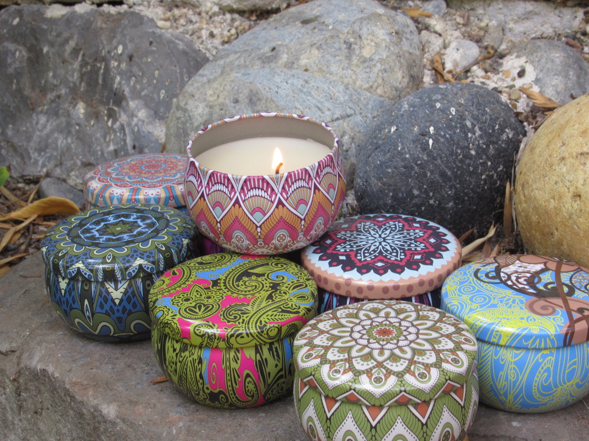
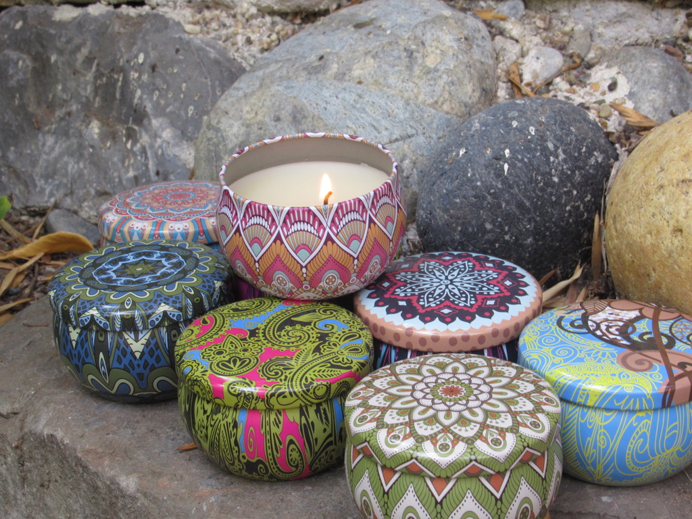

Our homemade candles come in 5 different scents. Rose, jasmine, chamomile, lavender, and peppermint. We make a conscious effort to
make our candles have a natural feel, to make you feel calm and happy. These candles come in _______ color. We origionally had our
candles come in brighter mandala holders, but we think that these holders will make you feel calmer and less outgoing.
Here are some pictures of our candles:
 

Our homemade candle holders are made with natural materials of pebbles and shells. Our pebble candle holders are made with little holes
between the rocks to let out the light of the candle. The shell candle holder is made in a way where the light is cupped in
which makes it shine from the top in a beautiful way. The bottom of our candle holders made from a jar lid wrapped in twine.
Here are some pictures of our candle holders: